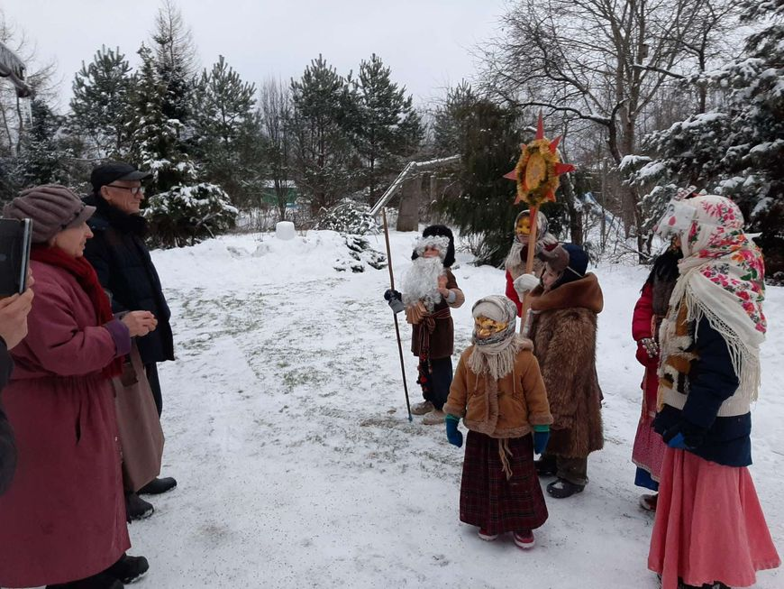
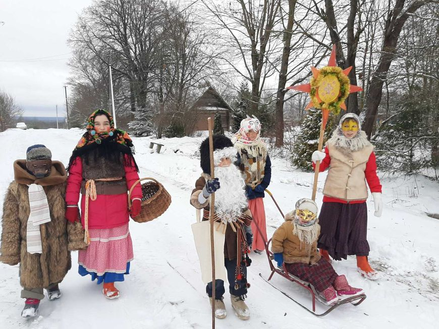
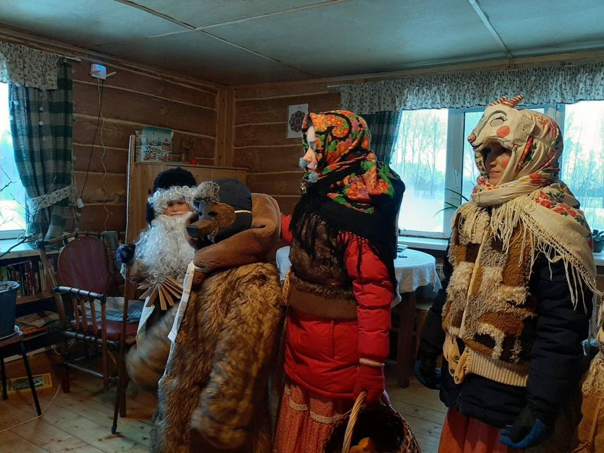
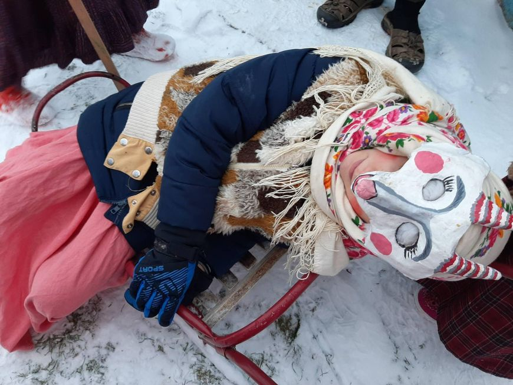
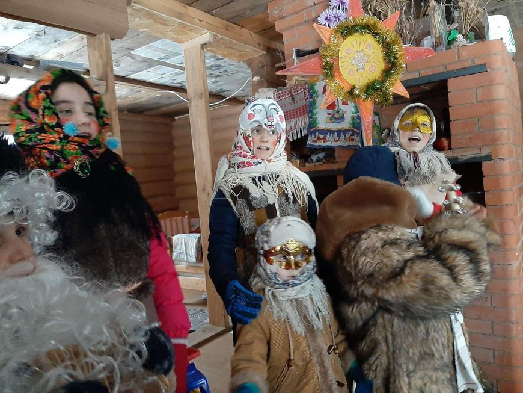

В деревне Гора Витебского района уже более 10 лет существует традиция колядования - с песнями, плясками, тематическими костюмами.
И если изначально в составе "калядоўшчыкаў" были взрослые и дети, то теперь подрастающее поколение инициативу проведения древнего
белорусского обряда берет на себя. Не без помощи старших, но в основном ребятишки сами работают над сценарием и заучивают
свои роли. Какие эмоции получают юные хранители рождественской традиции и их земляки, рассказала мама сразу нескольких
участников "гуртка" колядующих и местная жительница Алла Мишурная, стоявшая в числе других у истоков возрождения этого обряда.
Мальчики и девочки практически самостоятельно пишут сценарий, учат слова, песни, потешки, прибаутки, заучивают конкурсы для односельчан - и все на белорусском языке.

Перво-наперво ребята определяются, кто какие роли будет играть. Главных героев колядования каждый раз играют разные люди - по принципу
справедливости и чтобы каждый ощутил на себе, каково быть в центре всеобщего внимания.
Что касается новичков, то их никогда не оставляют на задворках, для любого найдется интересный образ. Вот вы видели когда-нибудь белорусского "бусла" зимой? А жители Горы в прошлом году его за крыло подержали - на счастье, чтоб велося и все в жизни срослося.
Бывает, что к ряженым из Витебского района присоединяются жители других деревень. В прошлом году даже приезжали гости из Минска, узнавшие об этом обряде из соцсетей. Они привозили свои костюмы и некоторые готовые номера, а в целом со сценарием их знакомили заранее. Столичным "туристам" очень понравилась и компания, и в целом атмосфера, царившая среди колядующих и деревенских жителей. Для минчан это была своеобразная экзотика, но с особым, теплым, милым сердцу национальным колоритом.

В этом году в рядах юных колядовщиков собралось шесть человек. Сказался сезон простуд, иначе бы их было больше. Самому старшему из участников
исполнилось 14 лет, а самой младшей актрисе - пять. Во время подготовки все были при деле: кто маску мастерил, кто искал и подбирал красочные
платки на голову. Ребята умеют сами ткать пояса, так что аутентичность они стараются соблюдать максимально. Верхнюю одежду тоже подбирают так,
чтобы соответствовала выбранной роли. Да и про грим не забывают, помогают друг другу дорисовывать румяные щечки да бровки черные, чтоб сразу
была видна истинная красота - не принцессы, а королевны!
Роль Козы нынче исполнила Русава Кухто. Образ колядной "Зоркі" примерила на себя Лада Мишурная, а ее брату Ведамиру довелось играть колоритного деда. В этом окружении данный персонаж с седой бородой символизирует связь поколений, а также природы и человека, так как дружит с Козой, которая олицетворяет собой плодородие. И когда дереза рогатая по обычаю теряет сознание, как бы умирая, ее нужно оживить подношениями, ведь и в жизни так же - уснувшему зимой полю весенней порой нужно поклониться, оживить вспашкой и возродить, принеся в дар семена будущего урожая.

Нарядная процессия, как правило, ходит по домам, где их ждут. Даже в соседние деревни заглядывает. "Чаще всего дети ходят по уже известным адресам,
но могут постучаться и в незнакомый дом. Обычно мы оповещаем односельчан, что в определенный день ребята пойдут колядовать, чтобы все были дома,
и наши ряженые не зря готовились. Когда соседи знают, что ребята пойдут по деревне, то сами выходят к воротам, предлагают зайти. В своей деревне
стараемся уважить всех, поэтому выбираем для колядования благоприятный день - снежный, но потеплее, чтобы дети не замерзли и не намокли.
В соседние деревни в километре-двух от нас, например, Трущи, Лемница, ребята могут дойти без устали, а вот в отдаленные стараемся отвезти их
на машине", - рассказала Алла Мишурная.
Особенно рады юным артистам пожилые сельчане. Да и для деревенских детей такие представления всегда интересны. Правда, совсем уже малыши порой прячутся, особенно от медведя, но быстро понимают, что это лишь игра и втягиваются в добрый обряд. Алла Мишурная считает, что такой обряд уже запечатан в наших генах, передается из поколения в поколение не только его содержание, но и отношение к нему, оттого и белорусы вне зависимости от возраста так сильно его любят.

Сами ряженые получают не меньший заряд энергии от традиционных Коляд. Им нравится, что их старания не проходят даром. Они очень ответственно подходят к подготовке, понимают, что могут принести людям в дом свет и радость, оттого и пожелания у них наполнены добрыми словами:
Будзь ваша здароў
Як рыжык бароў!
Гэй, Каляда, Калядзіца!
Среди "второстепенных" ролей есть у ребят и необычные, выходящие за традиционные рамки. Например, ходил как-то с ними по домам доктор, который раздавал
веселые рецепты. Почти никогда не обходится колядование без цыгана или цыганки, которые гадают гостеприимным хозяевам на богатый урожай, достаток и
лад в доме. В этом году ребята придумали для разнообразия новую идею - сделали волшебный "куфэрак", в который положили различные предсказания.
После колядования дети собираются у кого-то дома, пьют чай, обмениваются впечатлениями и делят дары от односельчан - мандарины, конфеты, печенье. Всем достается поровну, независимо от того, кто какую роль играл. Даже если у кого-то было задание лишь обсыпать хозяев домов зерном, чтобы в наступившем году на полях колос был крепкий да спелый. Или досталась роль без слов, как у медведя, который обычно демонстрирует пантомимы, показывая, как дети учатся, как хозяйка хлеб печет или хозяин дрова колет.

"Между ними всегда такая атмосфера единения возникает, что любо-дорого со стороны посмотреть. Приятно, когда дети тянутся к истокам наших традиций,
понимают, что родное и исконное, в том числе белорусское слово, надо беречь. Мои дети и в своих классах рассказывают и показывают, как проводятся
Коляды", - поделилась Алла Мишурная, добавив, что здесь срабатывает принцип "равный обучает равного" - школьники рассказы сверстников воспринимают
проще и легче, проникаются и всегда слушают с большим интересом.
Если позволит погода, то и в ближайшие пару дней ребята отправятся колядовать в соседние деревни, чтобы всем пожелать хорошего года, благополучия и настоящего белорусского счастья.
Дзе каза ходзіць,
Там жыта родзіць.
Дзе каза рогам,
Там жыта стогам.
Дзе каза нагой,
Там жыта капой.
Дзе каза хвастом,
Там жыта кустом.
Фото из личного архива Аллы Мишурной.